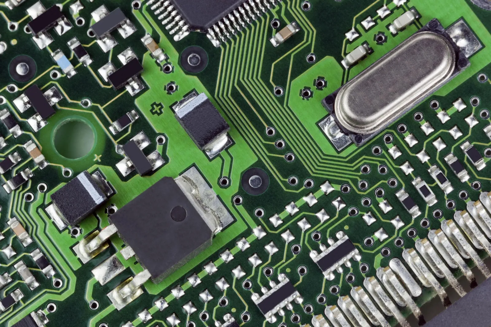

Si GEDA ya es dinámica, GEN-Z va un paso más allá: cada mes, un algoritmo selecciona, entre un universo cerrado de 98 acciones de sectores disruptivos, las 4 con mayor momentum. Activos más volátiles, menos diversificación, mayor potencial… y mayor riesgo.
«Lo que he comprobado que funciona en mi experiencia, siempre con sus riesgos, pero con total transparencia.»
Rentabilidad anualizada desde 2024
+106,7%
GEN-Z
Con dinero real desde 2024. Desde 2020, contando los años simulados: +68,8% al año.
Máx. caída-44,9%
2025+159,2%
2026 (ene–sep)+16,2%
Sharpe1,32
Volatilidad49,0%
Meses positivos59%
Datos a 30 sep 2026 · La web se actualiza cada trimestre; las posiciones de cada mes, en el informe
Evolución acumulada con las rentabilidades mensuales de GEN-Z (base 100, escala logarítmica), de ene 2020 a sep 2026. Rentabilidades en euros, sin comisiones ni impuestos. Rentabilidades pasadas no garantizan rentabilidades futuras.

En resumen
Lo esencial de GEN-Z en un minuto
Antes de entrar en cómo funciona por dentro: para quién es, qué puedes esperar en los años malos, cuánto trabajo te da y qué parte de su historial es con dinero real.
Para quién es
Sí, si es solo una parte pequeña y arriesgada de tu dinero y aguantas meses de −30%.
No, si puedes necesitar ese dinero o te pondría nervioso verlo caer a la mitad.
Su principal inconveniente: solo cuatro acciones de pocas temáticas: subidas y bajadas muy bruscas y muy concentradas.
Qué esperar
Mejor año: 2025, +159,2% (con dinero real).
Peor año: 2022, −0,5% (simulado).
Peor caída: −44,9%, entre octubre de 2025 y agosto de 2026 (con dinero real). Con 10.000 €, habrías llegado a ver 5.510 €.
A 30 de septiembre de 2026 todavía no había recuperado su máximo anterior.
Cuánto trabajo te da
4 acciones de temáticas de futuro, con el mismo importe.
Se revisa cada mes: el día 1 miras el informe y cambias solo lo que indique.
Necesitas un bróker con acceso a la bolsa de EE. UU. y, a veces, a otros mercados.
Con dinero real o simulado
Con dinero real desde 2024 (2 años y 9 meses): +106,7% al año.
Incluyendo los años simulados (2020–2023): +68,8% al año.
Poco tiempo con dinero real: la cifra anual depende mucho de uno o dos años excepcionales. No la tomes como referencia de lo que puede pasar.
Peor caída con dinero real: −44,9%, la misma que en todo el historial.
Datos a 30 de septiembre de 2026, en euros, sin comisiones ni impuestos. Lo que pasó no garantiza lo que pasará.
Inversión temática
Invertir en las tendencias del futuro
La inversión temática consiste en invertir en sectores y tendencias con fuerte potencial de crecimiento a largo plazo, como la inteligencia artificial, la robótica o la ciberseguridad. GEN-Z lo combina con el momentum: dentro de esos temas, se queda con las acciones que mejor se están comportando.
Activos más volátiles
Acciones de sectores jóvenes y muy sensibles a las noticias: pueden multiplicarse en pocos meses y perder un tercio en uno solo.
Menos diversificación
La cartera tiene solo 4 acciones, con el mismo importe cada una. Cada posición pesa un 25% del resultado.
Mayor potencial… y mayor riesgo
Pensada para perfiles que no solo toleran la volatilidad, sino que la aceptan como parte del juego. Es la última frontera antes del terreno puramente especulativo.
Cómo nació GEN-Z
Mi hijo adolescente quería invertir el dinero que había ahorrado con regalos de cumpleaños y Navidad. Como muchos adolescentes, esperaba «ganar mucho en poco tiempo». Aproveché la ocasión para explicarle lo que realmente implica invertir (paciencia, análisis y visión a largo plazo) y le propuse un reto: «Dime cinco ideas de negocio que conozcas, que te parezcan interesantes y que creas que serán importantes en el futuro.»
De ese reto salieron los sectores que más interesan a su generación y, con ellos, un sistema real.
DefensaImpulso por las tensiones geopolíticas y las nuevas inversiones en seguridad.
VideojuegosImpulsado por el lanzamiento de un nuevo título que preveía arrasar en ventas.
Inteligencia artificialFascinado por herramientas como ChatGPT y su rápido avance.
RobóticaUn futuro donde los robots formen parte de la vida cotidiana.
Tierras rarasMateriales esenciales para la transición tecnológica y energética.
CiberseguridadImprescindible en un mundo cada vez más digital.
Computación cuánticaUna tecnología experimental que podría transformar la inteligencia artificial, la medicina y la computación.
Con ayuda de herramientas como ChatGPT y Copilot, y analizando las principales posiciones de fondos y ETF especializados, construimos una lista definitiva de 98 empresas, americanas y europeas, que son las que se revisan todos los meses.
La técnica de GEN-Z
Cómo se eligen las 4 posiciones
GEN-Z es una estrategia propia de tipo momentum, con parámetros propios y actualización mensual, aplicada a un universo cerrado de acciones. Si quieres entender qué es el momentum y por qué puede funcionar, lo explico con más detalle en la página de GEDA.
1
Un universo cerrado de 98 acciones
Acciones americanas y europeas de los siete temas. La lista se actualiza continuamente a medida que los mercados evolucionan.
2
Momentum de los últimos 24 meses
Cada mes, un algoritmo escrito en Python analiza las 98 acciones del universo y mide su momentum en los últimos 24 meses.
3
Se eligen las 4 con mayor momentum
Las cuatro acciones con mayor momentum forman la cartera del mes.
1
25%
2
25%
3
25%
4
25%
4
El mismo importe en cada una. Nada más.
Las 4 acciones tienen asignado el mismo importe y se mantienen hasta el día 1 del mes siguiente.
5
Revisión el día 1 de cada mes
Se repite el análisis. Si no hay cambios, no hay que hacer nada. Si algo cambia, los suscriptores reciben exactamente qué comprar y qué vender.
Solo 4 posiciones. Cada acción pesa un 25% de la cartera, de modo que el movimiento de una sola puede cambiar el resultado del mes. Por eso GEN-Z es una estrategia de perfil muy agresivo.
Historial de posiciones
Qué ha tenido GEN-Z en cartera desde 2020
Cada barra es una acción y el tiempo que ha permanecido en la cartera. Así se ve cómo rota el sistema entre temas: de defensa y tierras raras al principio, a cuántico y tecnología después.
Datos a 30 sep 2026 · las posiciones del mes en curso solo llegan por correo
Desliza horizontalmente para recorrer los años.
8sustituciones de posiciones al año de media (2021–2025; entre 4 y 11)
55%de los meses tiene al menos un cambio en la cartera
6,0meses de permanencia media por posición (mediana: 4)
14 de 54posiciones han durado un solo mes
La rotación tiene un coste. Cada sustitución implica comprar y vender, con comisiones y posible efecto fiscal. Las rentabilidades publicadas no incluyen ninguno de los dos.
Movimientos individuales: la volatilidad de cada posición
+136,6%mejor mes de una posición (QBTS, may 2025)
-42,4%peor mes de una posición (RGTI, nov 2025)
46 de 324posiciones-mes con un movimiento de ±30% o más
82 de 324posiciones-mes con un movimiento de ±20% o más
Las acciones que más meses han estado en cartera
Más meses en cartera (de 81)
PLS.AX32 meses
NVDA29 meses
UAMY21 meses
SE20 meses
PLTR20 meses
RHM.DE19 meses
Posiciones de septiembre 2026
AcciónFORMFormFactor, Inc.
AcciónLRCXLam Research
AcciónTERTeradyne, Inc.
AcciónINTCIntel Corporation
Aquí se muestran en abierto las posiciones del mes anterior; las del mes actual se envían a los suscriptores el día 1 de cada mes. Ejemplo informativo que no constituye una recomendación de inversión.
Resultados históricos
Mes a mes desde 2020
Datos a 30 sep 2026 · La web se actualiza cada trimestre; las posiciones de cada mes, en el informe · Rentabilidades en euros, sin comisiones ni impuestos
Rentabilidades mensuales de GEN-Z por año
Métricas (ene 2020 – sep 2026)
Métrica
GEN-Z
Rentabilidad anualizada
+68,8%
Volatilidad
49,0%
Ratio de Sharpe
1,32
Máx. caída
-44,9%
GEN-Z asume una volatilidad muy alta (49,0%). El ratio de Sharpe mide la rentabilidad obtenida por cada unidad de volatilidad asumida. Los dos últimos años concentran una parte muy grande del resultado: ver el desglose por año en la tabla de arriba.
Cómo se ha comportado
48 de 81meses con rentabilidad positiva (59%)
+48,0%mejor mes (sep 2025)
-33,5%peor mes (nov 2025)
6meses con caídas superiores al 10% en 81
Anatomía de las caídas
Las mayores caídas desde un máximo previo, medidas con cierres mensuales. Las caídas pasadas no limitan las futuras: pueden ser mayores.
Caída
Máximo previo
Mínimo
Duración de la caída
Recuperación del máximo
-44,9%
oct 2025
ago 2026
10 meses
Aún no recuperado
-26,5%
mar 2022
dic 2022
9 meses
jul 2023 (16 meses)
-14,6%
jul 2023
oct 2023
3 meses
nov 2023 (4 meses)
-12,5%
dic 2019
mar 2020
3 meses
abr 2020 (4 meses)
-11,8%
jun 2024
jul 2024
1 mes
ago 2024 (2 meses)
-8,1%
feb 2021
abr 2021
2 meses
jul 2021 (5 meses)
A 30 sep 2026, GEN-Z se encuentra un 28,7% por debajo del máximo de octubre de 2025.
Límites del sistema
Cuándo funciona y cuándo sufre
GEN-Z no es apropiada para todo tipo de inversor. Piensa bien tu perfil de riesgo y asigna a esta estrategia una cantidad prudente de tu patrimonio.
Donde suele funcionar mejor
Cuando un tema lidera con fuerza durante muchos meses: 2024 (+144,6%) y 2025 (+159,2%) se apoyaron sobre todo en los sectores cuántico y de tierras raras.
Cuando las acciones elegidas suben a la vez: septiembre de 2026 (+29,4%) terminó con las cuatro posiciones en positivo.
Donde suele sufrir
Giros bruscos después de una gran subida: noviembre de 2025 (-33,5%) y julio de 2026 (-32,0%) son sus dos peores meses, muy por encima del 10–15% que se considera normal en el sistema.
Caídas prolongadas: la mayor, del -44,9%, duró 10 meses y a septiembre de 2026 todavía no se ha recuperado.
Concentración: con 4 posiciones, una sola puede mover la cartera un 10% en un mes.
Qué hay que tener claro
La rentabilidad de 2024 y 2025 fue excepcional y no debe tomarse como lo normal: viene de una fase muy concreta de los sectores cuántico y de tierras raras.
El sistema no predice: reacciona a lo que el precio ya está mostrando.
Si alguien hubiera entrado justo antes de la caída de noviembre de 2025, su experiencia con la estrategia habría sido muy distinta a la que reflejan las cifras medias.
Qué significa la caída máxima en euros
Ejemplo ilustrativo con 5.000 €: la caída máxima histórica de GEN-Z ha sido del −44,9%.
Inversión inicial5.000 €
Tras una caída del −44,9%2.755 €
Subida necesaria para volver a 5.000 €+81,5%
Es una ilustración, no una previsión: la caída máxima histórica no es un límite y las caídas futuras pueden ser mayores. Sin comisiones ni impuestos. El historial incluye años de backtest (2020–2023).
Comentario
Comportamiento en 2026 (hasta septiembre)
GEN-Z acumula un +16,2% en lo que va de año. Tras un comienzo irregular (+7,2% en enero, -4,6% en febrero y -5,6% en marzo), abril marcó un giro con un +25,9%; después llegó el peor mes del año, julio (-32,0%), y septiembre ha devuelto un +29,4% con las cuatro posiciones en positivo.
El cuántico queda atrás: el sistema ha ido dejando el sector cuántico, cuyo 2025 fue explosivo (ASTS, QBTS y RGTI hasta febrero), y rotando hacia otros sectores más moderados.
Las posiciones actuales: TER entró en marzo, FORM en abril, INTC en junio y LRCX en julio. PLS.AX (tierras raras) estuvo en cartera de marzo a junio.
UAMY acompañó a la cartera desde septiembre de 2024 hasta mayo de 2026.
Comportamiento en 2025
2025 terminó con un +159,2%, apoyado principalmente en los sectores cuántico y de tierras raras. La estrategia llegó a acumular un +322,6% a cierre de octubre; después, en noviembre y diciembre, devolvió una parte importante (-33,5% y -7,8%). Es el origen de la mayor caída de su historia, que se produjo tras una explosión de rentabilidad.
Preguntas frecuentes
Sobre GEN-Z
Cómo se calculan las cifras: rentabilidades en euros (los activos en USD se convierten con el tipo de cambio del día), precios de Yahoo Finance, sin comisiones ni impuestos. Las rentabilidades parten cada mes de los pesos objetivo (pesos iguales entre las posiciones). Más detalle en la metodología.
«Cada estrategia tiene un nombre con significado. GEN-Z viene por la nueva generación: esta estrategia la diseñamos juntos mi hijo adolescente y yo, basada en los sectores que le interesan a su generación.»